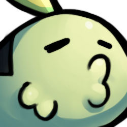

Comisiones
Emotes
Emotes para twitch y para discord, son escencialmente emoticonos especiales o emoji y se utilizan para comunicar, transmitir un mensaje o emoción asociada con su imagen.
El tiempo aproximado para cada emote es de 2 a 3 días, por favor contacta conmigo para conocer detalles y confirmar el precio y tiempo de entrega.
Usted obtendra cuatro imagenes en png de cada emote: 250px (Original) y las medidas de twitch: 112, 56 y 28 px.
El precio lo manejo por emote: $8 USD.
